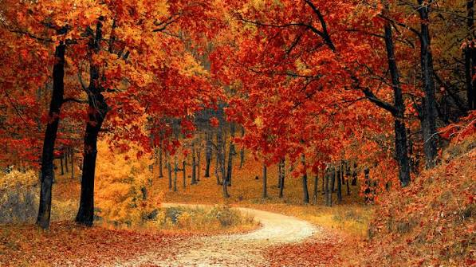
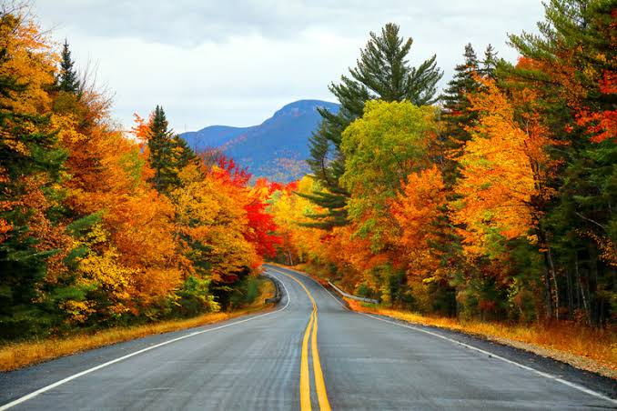

Fall is a beautiful season when the weather becomes cooler and the leaves begin to change colors. Trees turn bright shades of red, orange, and yellow before their leaves fall to the ground. Many people enjoy spending time outside in the crisp, cool air. Fall is also a great time to wear cozy sweaters and enjoy warm drinks.
During fall, people celebrate holidays like Halloween and Thanksgiving. Families may visit pumpkin patches, carve pumpkins, or gather together for special meals. Animals also begin preparing for the colder winter months ahead. Fall is a peaceful and colorful season that many people look forward to each year.


- Pumpkin patches
- Halloween parties
- Thanksgiving dinners
| Activities | Month | Location |
|---|---|---|
| Visit a pumpkin patch | October | Local farms |
| Carve a pumpkin | October | Home |
| Attend a Halloween party | October | Community centers |
| Have a Thanksgiving dinner | November | Home or restaurants |